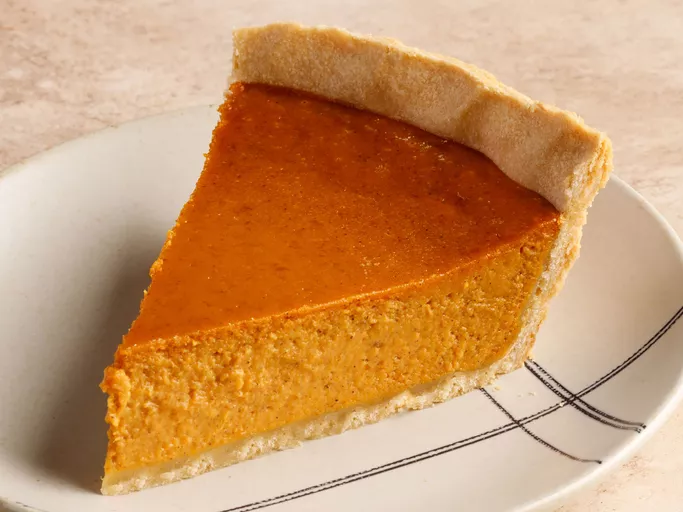

Pumpkin Pie

Description
Get ready for October with this seasonal recipe!
The Pumpkin Rabbit...is following me.
Ingredients..
- 1 (9 in) unbaked pie crust
- 1 (16 oz) can pumpkin puree
- 1 (14 oz) can sweetened condensed milk
- 2 large eggs
- 1 tsp pumpkin pie spice
Steps
- Preheat oven to 425 degrees F (220 degrees C).
- Fit pie crust into a 9 in pie dish and place it on a baking sheet.
- Combine pumpkin puree, condensed milk, eggs, and pumpkin pie spice
in a large bowl; mix until combined.
- Pour mixture into the pie crust. Bake in the preheated oven for 15 min.
Reduce heat to 350 degrees F (175 degrees C) and continue to bake until filling is set,
(35 to 40 min).
- Remove from the oven, set on a wire rack, and cool completely before serving.